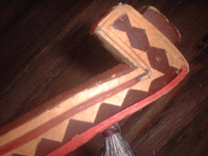
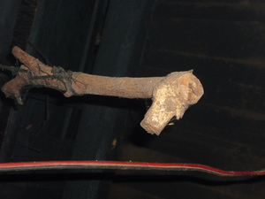

sanggat  
/saŋgat/
v_rt.
“hook_up”
n.
rake
Eng. rake
OCM: Miscellaneous Hardware (414)
Online dict status: -
Usage level: R
n.
(sanggatan, -an) hook (for hanging pots and baskets)
Eng. hook
OCM: Miscellaneous Hardware (414)
Online dict status: -
Usage level: M
v.
for someone (egsanggat, agent, eg><ø-) to hang something (igsanggat, theme, ig><ø-) up on something (egsanggatan, location, eg><an-)
Egsanggat e pad te liyang.
I will hang up the back-basket.
Eng. hang up; hitch up; hook up
Tag. sábit
Ilo.: sab-it
OCM: Miscellaneous Hardware (414)
Online dict status: -
Usage level: F
v.
for someone (egsanggat, agent, eg><ø-) to rake
Egsanggat e pad te lapek.
I will rake the grass cuttings.
Eng. rake
OCM: Miscellaneous Hardware (414)
Online dict status: -
Usage level: R
v.
(egsanggat, eg><ø-) to get (something) with a hook
Egsanggat e pad te mangga.
I will get mangoes with a hook.
Eng. get with hook
OCM: Miscellaneous Hardware (414)
Online dict status: -
Usage level: M
v.
(egpananggaten, eg><en-paN-) to rake all of (something)
Egpananggateng ku pad ka lapek.
I will rake up all the cuttings.
Eng. rake all
OCM: Miscellaneous Hardware (414)
Online dict status: -
Usage level: R
v.
(egpananggat-sangat, agent, eg><ø-paN-rdpRT-) to get tripped up
Kenad iya egpananggat-sangat ne eglalag si Mayor te tangkaan te me etew.
The mayor never gets tripped up when speaking in front of the people.
Eng. trip
Online dict status: -
Usage level: R
adj.
(impananggat, iN-pA-) hangered something
Impananggat ka me liyang diyè te alabat.
Baskets were hangered on the wall.
Eng. hangered
Online dict status: -
Usage level: R
Updated by: RJH,QDL,RJH
Last updated: 29/Jul/2014
This page last updated: 28-Dec-2019
Copyright © 2009-2014, Matigsalug Language Christian Association, Inc